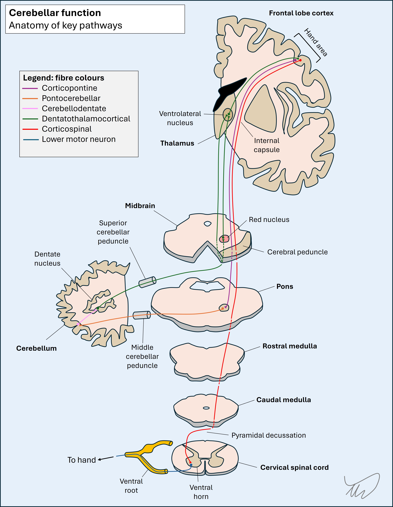

Case 2. Clumsy hand
Where is the lesion?
The problem is an isolated right upper limb issue. There is no weakness or numbness – the issue is clumsiness and inaccuracy on both fine and gross movements that this patient would normally have no issues with. He experienced these holding items and writing, and the exam shows ataxia in the right arm – missing a target, with tremor on approach, and messy, crude movements on alternating between tapping the both sides of the right hand.
The signs localise to the cerebellum and are in the right arm alone. To be more specific we can think about what part of the cerebellum is affected.
The cerebellum has three sections, with two hemispheres either side of the midline (vermis)
VermisVermis lesions cause instability of gait, stance, and sitting balance (truncal ataxia). Individual limbs do not display cerebellar signs however – the ataxia is shown by the following:
Vestibulocerebellum
Lesions in the vestibulocerebellum – the floccular and nodular aspect, which is the most inferior – also affect balance and stance, in addition to sometimes showing other ‘vestibular’ features such as nystagmus, and patients sometimes experience vertigo (however, this doesn’t localise that well, and can be seen in various cerebellar lesions). Again, the features do not conform to this.
Cerebellar hemispheresThe cerebellar hemispheres take input from the motor parts of the brain then return it. There are several pathways involved in cerebellar input and output, including for eye movement control and balance - but a major pathway controls coordination to individual limbs. This pathway has 2 parts; the afferent (brain to cerebellum) is cortico-ponto-cerebellar, and the efferent is dentato-rubro-thalamic. There are several steps to each limb.
The left cerebral cortex parts involved in motor planning send corticopontine fibres to the left pons. These then project pontocerebellar fibres to the cerebellum via the middle cerebellar peduncle (MCP), otherwise known as the brachium conjunctivum. There is decussation – the left fibres pass via the right MCP to the right cerebellar hemisphere.
The efferent pathway then begins – the hemisphere projects to the dentate nucleus, then fibres pass out via the superior cerebellar peduncle (SCP) and decussate again. They then go to the ventrolateral (VL) nucleus of the thalamus, or pass via the red nucleus as an intermediate stop before going to the thalamus; these fibres are called dentatorubrothalamic fibres. Finally, the VL projects thalamocortical fibres which go to the motor cortex.
There’s an important point here: the afferent limb crosses in the pons before entering the cerebellum via the MCP, and the efferent crosses again in the midbrain before rising into the thalamus. The eventual motor output from the cortex crosses again in the medullary pyramids before reaching the limbs.
This means that a lesion affecting the efferent pathways right cerebellar hemisphere, dentate nucleus or SCP will produce ipsilateral limb ataxia . This is also true of a right MCP lesion, affecting the afferent pathway.
In contrast, efferent pathway lesions in the red nucleus or the ascending tract going to the thalamus after the decussation will produce contralateral limb ataxia (an example is Benedikt syndrome – a midbrain lesion).
This patient’s lesionThe best explanation is a problem in the right cerebellar hemisphere, dentate, SCP or MCP, causing ipsilateral upper limb ataxia.
What about the leg, which is spared? There is somatotopic organisation of the cerebellar structures, but its exact mapping is debated. It probably isn’t organised into single large areas controlling specific body segments - unlike the motor and sensory homunculi in the cerebral cortex.
We can’t really be more specific than saying the right cerebellar hemisphere – somewhere. It could be the hemispheric grey matter, the white matter, the dentate nucleus, or the MCP or SCP.
What is the lesion?